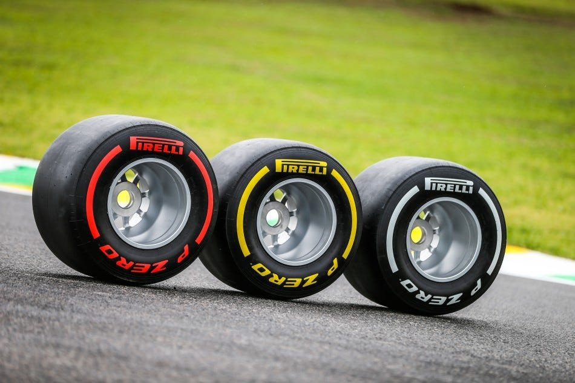

Fastest Tire
Soft (Red)
Maximum speed off the start line and for overtaking sprints, but the rubber wears out quickly.
Lap PaceFastest (0.00s)
Best Life~13 Laps
Loses Grip ('Cliff')~Lap 18
In Formula 1, tires are called compounds (the rubber recipe). Softer rubber gives huge grip but wears out quickly. Harder rubber lasts for dozens of laps but is slightly slower.

Maximum speed off the start line and for overtaking sprints, but the rubber wears out quickly.
The strategic workhorse. Balances great speed with strong durability—used in almost every winning race.
The marathon tire. Slightly slower single lap speed, but resists overheating and runs the longest.
In a dry F1 race, the rules mandate that every driver must use at least two different tire types during the race (for example, Soft then Hard, or Medium then Soft). You cannot stay on the same tire type all race long.